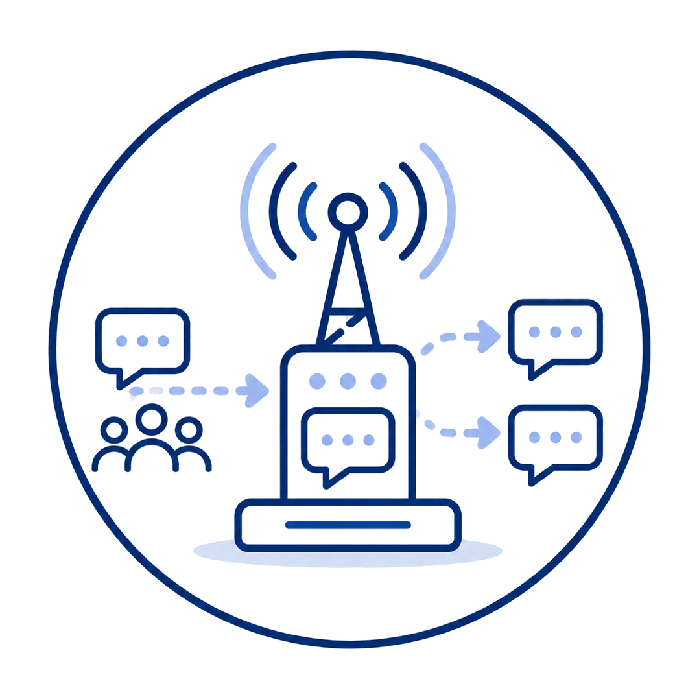
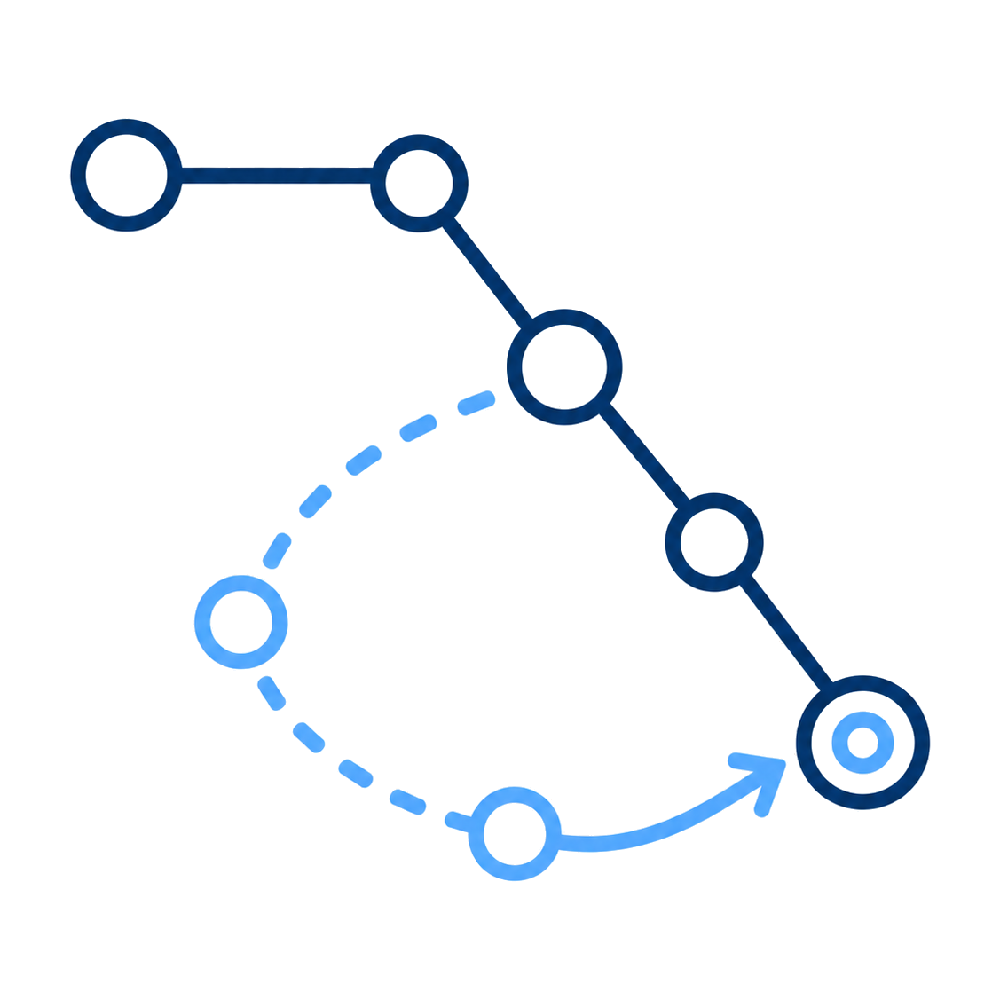

Fluxo de comunicacao
-
1
 Mensagem criada
Mensagem criadaDefesa Civil
-
2

ArmazenamentoGateway comunitario
-
3
 Link indisponivel
Link indisponivelNo intermediario
-
4

Nova janelaRota alternativa
-
5
 Entrega
EntregaMorador
-
6
 Retorno
RetornoStatus ou socorro
-
7
 Painel atualizado
Painel atualizadoDefesa Civil
Status atual: Mensagem criada pela Defesa Civil.